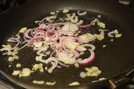
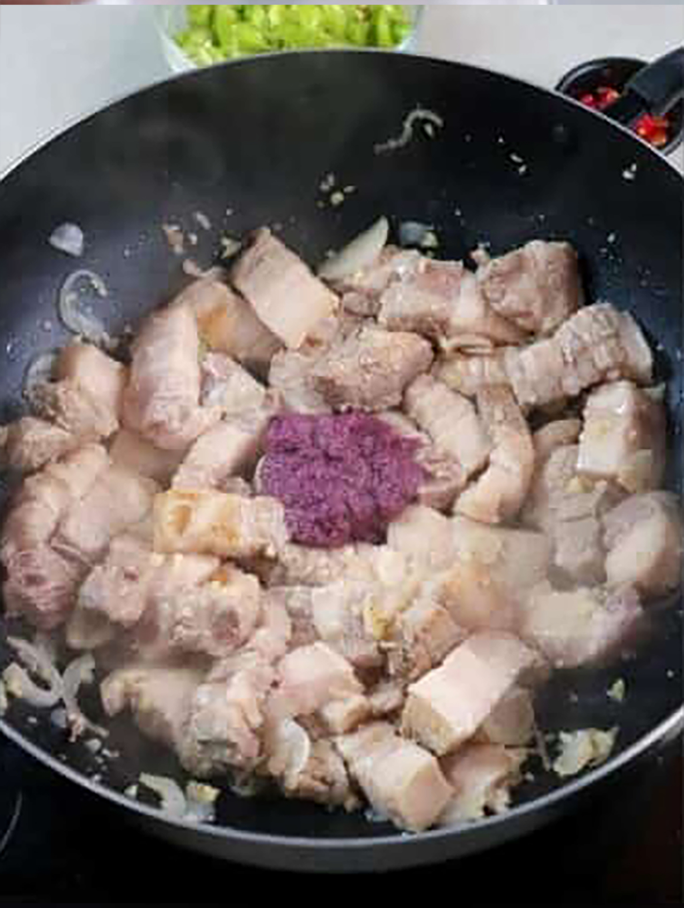
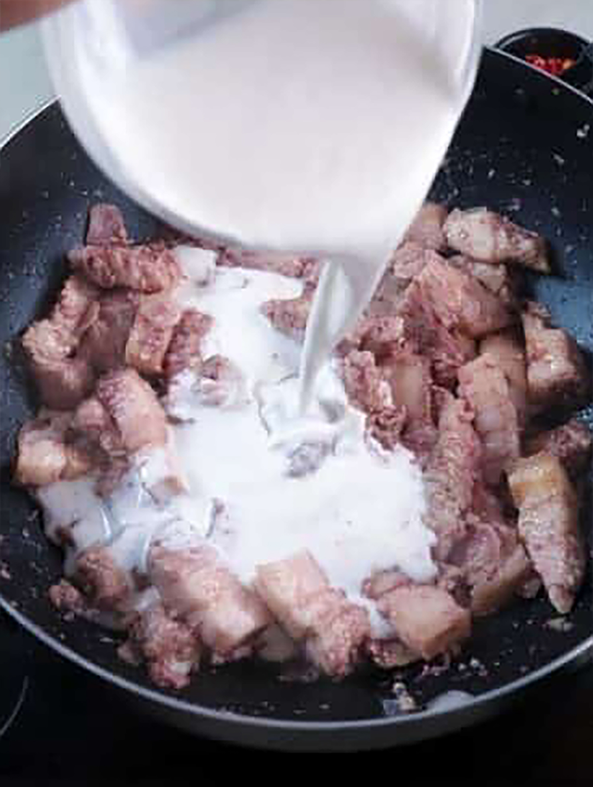

BICOL EXPRESS
Pork Bicol Express is a type of Filipino spicy pork dish.
Pork slices are cooked in coconut milk with Thai chili and long green
peppers.
Its main source of flavor is derived from shrimp paste, which is locally
known as bagoong.
Balaw is a more traditional ingredient for Bicol
Express. This is descried as salted shrimp fry
Ingridients:
- 1 ½ pork sliced into pieces
- 5 pieces Thai chili pepper
- 2 pieces long green pepper
- ¼ cup shrimp paste
- 2 cups coconut milk
- 1 cup water
- 1 piece onion chopped
- 5 cloves garlic crushed
- 3 tablespoons cooking oil
- Ground black pepper to taste
PROCEDURE
- Heat oil in a pan.

-
Saute onion and garlic. Add pork once the onion softens. Cook until
light brown.

-
Pour water and coconut milk. Let boil. Cover and cook between low to
medium heat for 40 minutes. Add more water if needed.

-
Season with ground black pepper. Continue to cook until sauce reaches
desired consistency.

- Serve with warm rice.

!!! HAPPY EATING !!!!